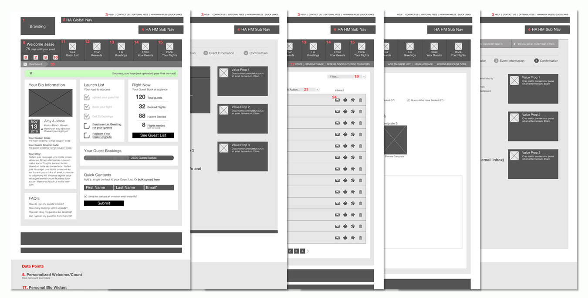

JimmyGirl Identity and Branding
Jimmygirl creates, collects & sells vintage decor with a pop of color. They were in need of a brand that exemplified that gusto to their patrons. Firm sans-serif type allows the tagline and accent chair to be playful & energetic while keeping it's modern edge. Production included logo, brand guidlines, business cards, letterhead, and custom decals for their trailors.
- Branding
- Identity
- Marketing
- Graphic Design
- Front-End Development
It all starts with a plane
This project had a large amount of user needs, since I worked so closly with the client and strictly followed there brand guidlines, most of the work was spent mapping out the user experience and flow of the interface. Countless hours were spent on the wipeboard creating and recreating wireframes, but I'm into that sort of thing.
